Section 9 Supplementary Figures
9.1 Load data
9.2 WGS vs DLP
library(ggridges)
source(here("src/wgs_dlp.R"))
g1 <- get_wgs_dlp_plot(hscn, "SA1049")
g2 <- get_wgs_dlp_plot(hscn, "SA1050")
examples <- plot_grid(g1, g2, ncol = 1, labels = c("a"))
stats <- fread(config$wgsstats)
gloh <- stats %>%
ggplot(aes(x = loh.dlp, y = loh.wgs)) +
ggrepel::geom_text_repel(aes(label = sample)) +
geom_abline(lty = 2, alpha = 0.5, col = "grey40") +
xlim(c(0, 0.6)) +
ylim(c(0, 0.6)) +
xlab("Fraction of genome LOH (DLP Pseudobulk)") +
ylab("Fraction of genome LOH (Bulk)")
snv_summary <- snvs %>%
.[max_strelka_score > 20 & max_museq_score > 0.9 & is_dbsnp == 0 & !is.na(mappability)] %>%
.[, list(total_counts = sum(total_counts), alt_counts = sum(alt_counts)), by = .(state_AS_phased, state, chr, start, ref, alt, LOH, Maj, Min, sample)] %>%
mutate(type = case_when(
Maj == Min ~ "Balanced",
Min == 0 | Maj == 0 ~ "LOH",
Min != Maj ~ "Unbalanced"
)) %>%
mutate(VAF = alt_counts / (total_counts))
dfdata <- data.frame(type = c("Balanced", "LOH"),
x = c(0.5, 1.0))
dat_text <- data.frame(type = c("Unbalanced", "Unbalanced"), label = c("Early", "Late"), x = c(0.85, 0.15))
(gVAF <- snv_summary %>%
group_by(state_AS_phased, sample) %>%
mutate(n = n()) %>%
ungroup() %>%
filter(state < 8 & state > 0, total_counts > 19, n > 100) %>%
#filter(VAF > 0.1) %>%
mutate(LOH = ifelse(LOH == "LOH", "YES", LOH)) %>%
add_count(state_AS_phased) %>%
filter(nn > 100) %>%
ggplot(aes(fill = type, col = type)) +
#geom_density_ridges(scale = 2, alpha = 0.3, stat = "binline", bins = 50) +
geom_density_ridges(aes(y = fct_reorder(state_AS_phased, state), x = VAF), scale = 2, alpha = 0.3) +
theme_ridges(center_axis_labels = TRUE) +
geom_vline(data = dfdata, aes(xintercept = x), lty = 2, col = "grey40") +
scale_x_continuous(breaks = c(0.0, 0.5, 1.0)) +
scale_color_manual(values = c("grey40", "#025767", "#53AFC0")) +
scale_fill_manual(values = c("grey40", "#025767", "#53AFC0")) +
xlab("Variant allele frequency (somatic mutations)") +
ylab("Allele specific state") +
facet_wrap(~type, scales = "free_y") +
panel_border() +
theme(legend.position = "none") +
geom_text(data = dat_text, aes(label = label, x = x, y = 13.3), col = "black"))combined <- plot_grid(NULL, examples,
plot_grid(gloh, gVAF, labels = c("b", "c"), rel_widths = c(0.75, 1)), ncol = 1, rel_heights = c(0.02, 1, 0.55))
combined
9.3 All WGS vs DLP plots
samples <- names(config$datasets)
samples <- samples[!samples %in% config$datagroups$htert]
samples <- samples[samples != "2295"]
samples <- intersect(samples, unique(hscn$sample))
for (dataset in samples) {
print(get_wgs_dlp_plot(hscn, dataset, rephase = F))
cat("\n \n")
}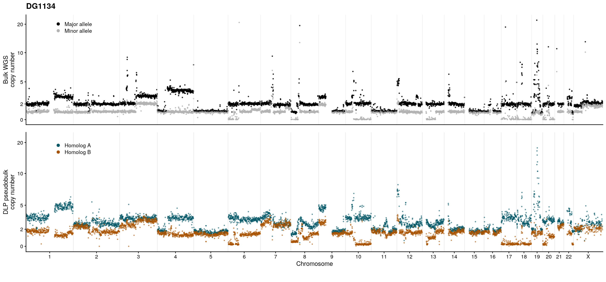

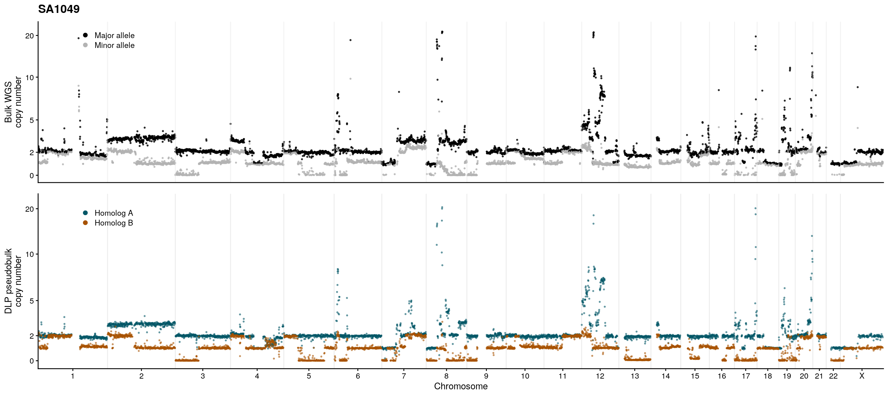

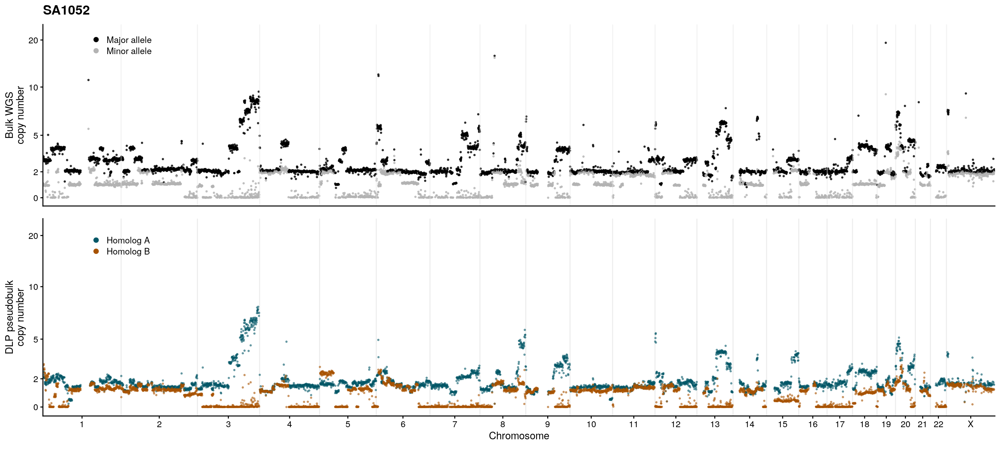
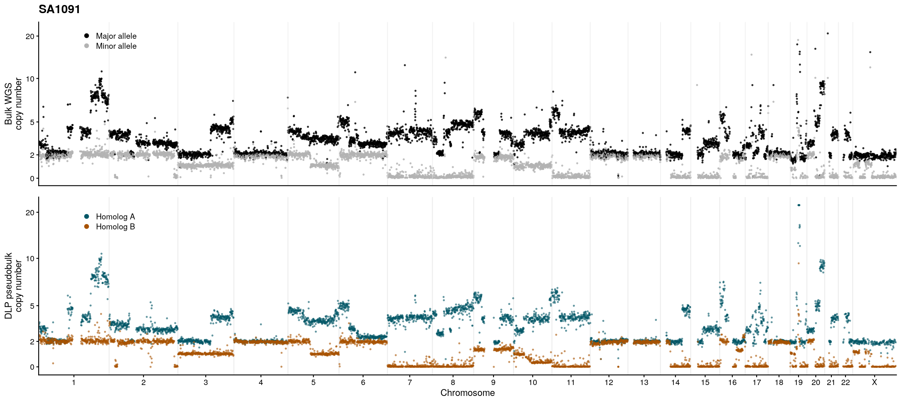
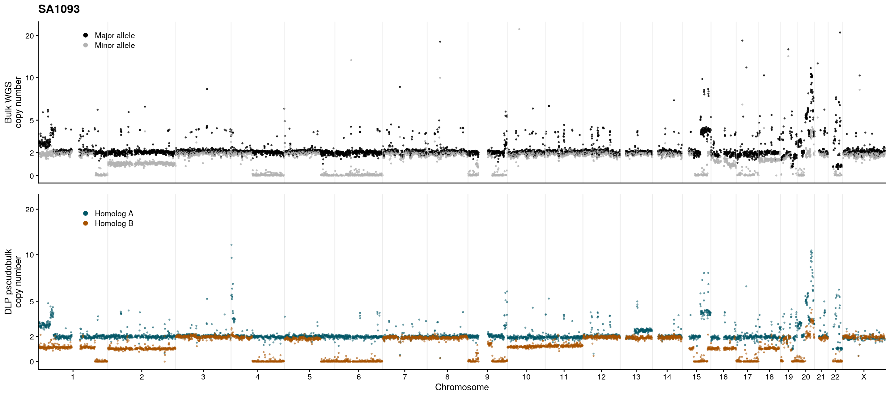
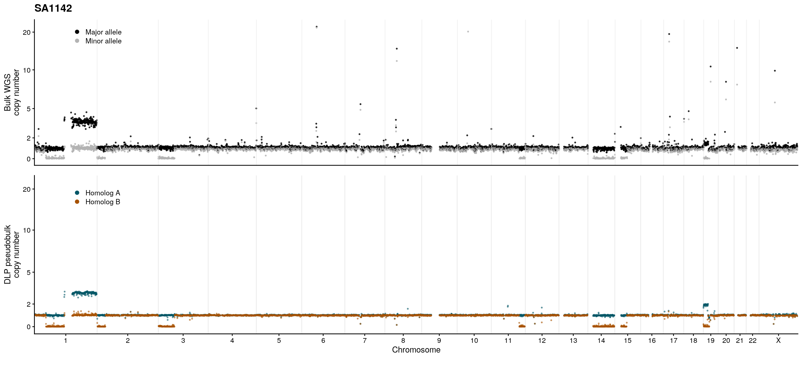
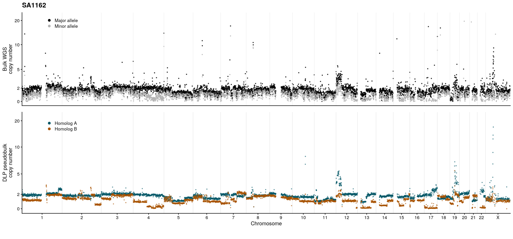
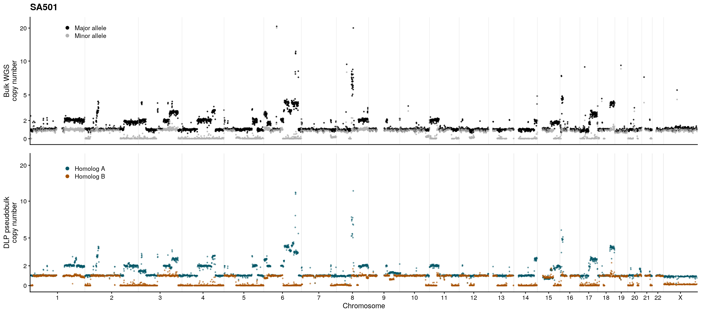
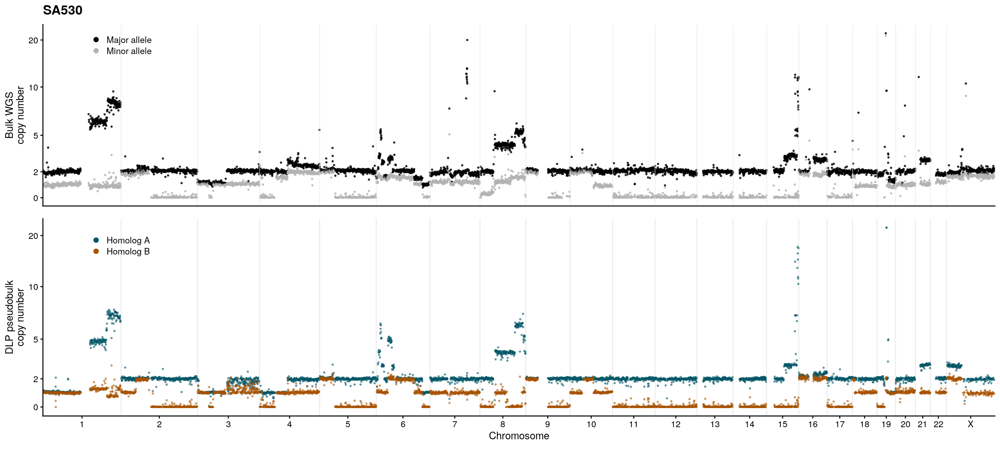
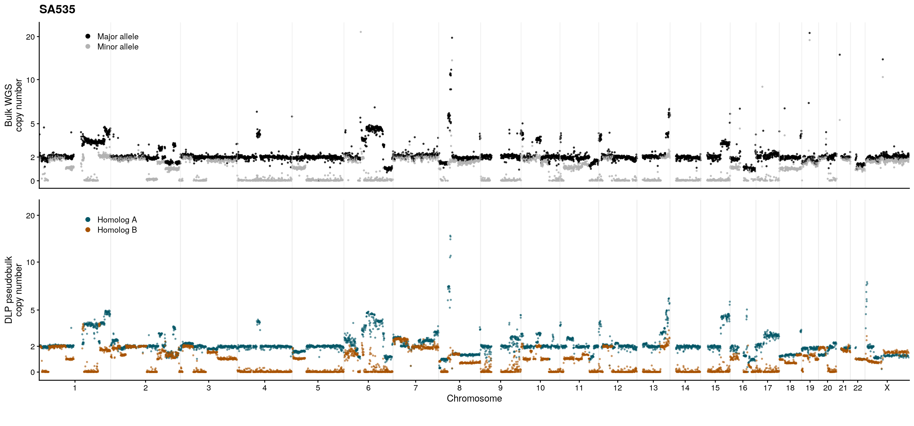
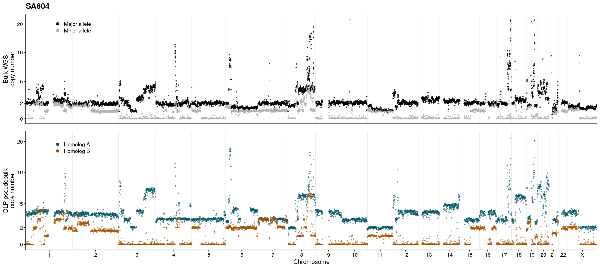
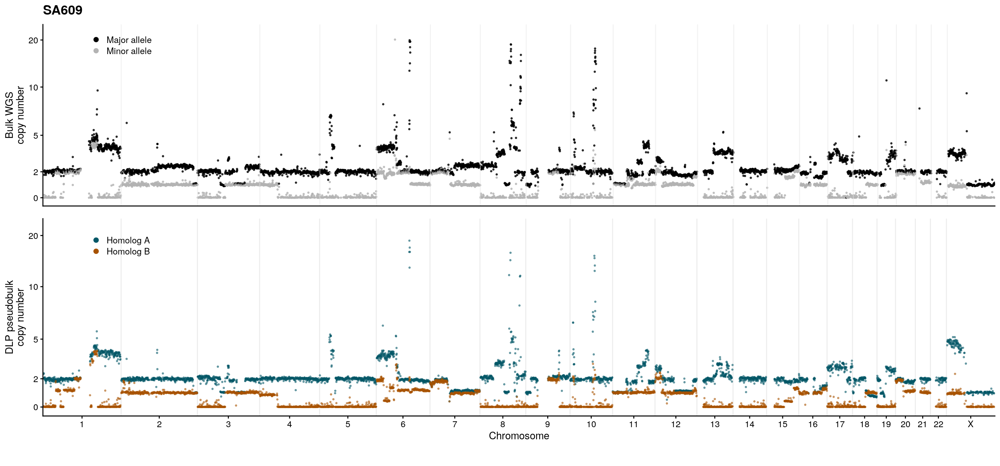